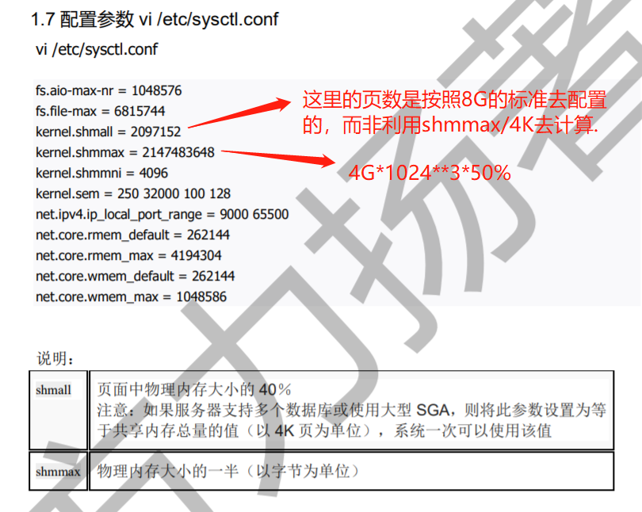
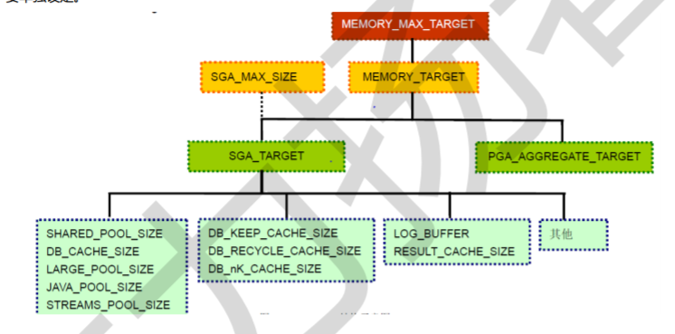
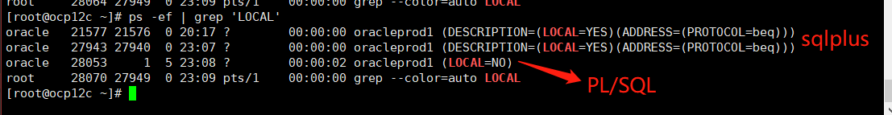

<!DOCTYPE html>
<html lang="en">

<head>
  <meta charset="utf-8" />
    
  <meta name="viewport" content="width=device-width, initial-scale=1, maximum-scale=1" />
  <title>
    20191223_2356-Oracle12cR2 |  Shinnosuke
  </title>
  
  <link rel="shortcut icon" href="/images/Shinnosuke.jpg" />
  
  
<link rel="stylesheet" href="/css/style.css">
  
<script src="/js/pace.min.js"></script>


  

  

<meta name="generator" content="Hexo 4.1.1"></head>

</html>

<body>
  <div id="app">
    <main class="content">
      <section class="outer">
  <article id="post-20191221-1006-Oracle12cR2" class="article article-type-post" itemscope
  itemprop="blogPost" data-scroll-reveal>

  <div class="article-inner">
    
    <header class="article-header">
       
<h1 class="article-title sea-center" style="border-left:0" itemprop="name">
  20191223_2356-Oracle12cR2
</h1>
  

    </header>
    

    
    <div class="article-meta">
      <a href="/2019/12/23/20191221-1006-Oracle12cR2/" class="article-date">
  <time datetime="2019-12-23T15:56:17.000Z" itemprop="datePublished">2019-12-23</time>
</a>
      
    </div>
    

    
    
    <div class="tocbot"></div>


    

    <div class="article-entry" itemprop="articleBody">
      


      

      
      <h2 id="OCP12c"><a href="#OCP12c" class="headerlink" title="OCP12c"></a>OCP12c</h2><h3 id="01-Oracle12cR2"><a href="#01-Oracle12cR2" class="headerlink" title="01. Oracle12cR2"></a>01. Oracle12cR2</h3><ul>
<li>Repo Point<br>[&lt;Oracle-12.2&gt;linuxx64_12201_database.zip]（<a href="https://www.oracle.com/downloads/software-license-agreement.html#license-lightbox）" target="_blank" rel="noopener">https://www.oracle.com/downloads/software-license-agreement.html#license-lightbox）</a></li>
</ul>
<h3 id="02-runInstaller"><a href="#02-runInstaller" class="headerlink" title="02. runInstaller"></a>02. runInstaller</h3><p><code>To be continued...</code></p>
<h3 id="03-Oracle12c-架构"><a href="#03-Oracle12c-架构" class="headerlink" title="03. Oracle12c 架构"></a>03. Oracle12c 架构</h3><h4 id="实例和内存结构"><a href="#实例和内存结构" class="headerlink" title="实例和内存结构"></a>实例和内存结构</h4><p><code>Instance</code> 实例其实就是物理内存段的一部分，相当于软件进程.<br><code>kernel.shmall</code> 为共享内存大小，按照192.168.62.103测试库来看，可以配置为 <strong>4294967296</strong> 个page（4KB/page）.<br><code>kernel.shmmax</code> 用于定义单个共享内存段的最大值，<code>kernel.shmmax</code> 设置应该足够大，能在一个共享内存段下容纳下整个的 <code>SGA</code> ，设置的过低可能会导致需要创建多个共享内存段，这样可能导致系统性能的下降，最大值为16GB（在大多数情况下，该值应该比SGA大）.按照192.168.62.103测试库（内存128G）来看，可以配置为 <strong>88719476736</strong>（82GB）.<br>53477376 pages / 219043332096 bytes</p>
<p><code>Ex</code> 内核参数，系统内存4G，下面为对应内核配置大小（出自官方白皮书）<br></p>
<p>实例内存由下面<strong>两组内存参数</strong>动态调整：<br><code>SGA</code>（total_mem × 80%） × 80%，一般不超过物理内存的1/2.<br><code>PGA</code>（total_mem × 80%） × 20%.</p>
<table>
<thead>
<tr>
<th>×</th>
<th>×</th>
<th>MEM参数</th>
</tr>
</thead>
<tbody><tr>
<td>×</td>
<td>×</td>
<td><code>MEMORY_MAX_TARGET</code>（静态）⬇</td>
</tr>
<tr>
<td><code>SGA_MAX_SIZE</code></td>
<td>×</td>
<td><code>MEMORY_TARGET</code>（动态）⬇</td>
</tr>
<tr>
<td>×</td>
<td><code>SGA_TARGET</code>⬇</td>
<td><code>PGA_AGGREGATE_TARGET</code>⬇</td>
</tr>
<tr>
<td>×</td>
<td><code>DB_CACHE</code> <code>SHARED_POOL</code> <code>LARGE_POOL</code> …</td>
<td></td>
</tr>
</tbody></table>


<h4 id="关于SGA和PGA的一点配置总结"><a href="#关于SGA和PGA的一点配置总结" class="headerlink" title="关于SGA和PGA的一点配置总结"></a>关于SGA和PGA的一点配置总结</h4><p><code>Tips</code> 相关总结不一定正确，仍需实验验证.<br>[相关博客：关于oracle11G的自动内存管理MEMORY_TARGET和MEMORY_MAX_TARGET]（<a href="https://blog.csdn.net/fjseryi/article/details/50818843）" target="_blank" rel="noopener">https://blog.csdn.net/fjseryi/article/details/50818843）</a><br><code>MEMORY_MAX_TARGET</code> 参数定义了 <code>MEMORY_TARGET</code> 可以达到的最大值，若未设置，则默认等于 <code>MEMORY_TARGET</code> 的值；该值为数据库初始化参数，不可动态调节，通过调整Spfile中的<code>MEMORY_MAX_TARGET</code>并重启实例，可以达到调整的目的.<br><code>MEMORY_TARGET</code> SGA + PGA. Oracle总共可以使用的共享内存大小，不可超过 <code>MEMORY_MAX_TARGET</code> 的大小，默认为0；该值可以动态调节，无需重启实例.<br><code>动态内存管理</code> 使用动态内存管理时，<code>MEMORY_TARGET</code>下的 <code>SGA_TARGET</code> 和 <code>PGA_AGGREGATE_TARGET</code> 代表它们各自内存区域的<strong>最小设置</strong>，要让Oracle完全控制内存管理，上述两个参数应该设置为0.</p>
<ul>
<li><p><code>MEMORY_TARGET</code>设置为非0值：</p>
<ol>
<li>设置了<code>SGA</code>/<code>PGA_AGGREGATE_TARGET</code>，则两个参数将各自作为最小值，作为各自的初始化目标值.</li>
<li>未设置<code>SGA</code>/<code>PGA_AGGREGATE_TARGET</code>，则根据DB状态按照一个固定比例分配：<br>SGA = MEMORY_TARGET * 60%.<br>PGA_AGGREGATE_TARGET = MEMORY_TARGET * 40%.</li>
<li>仅设置了两个中的一个，则 SGA = MEMORY_TARGET - PGA_AGGREGATE_TARGET；反之类似.</li>
</ol>
</li>
<li><p><code>MEMORY_TARGET</code>设置为0或未设置：</p>
<ol>
<li>设置了<code>SGA</code>/<code>PGA_AGGREGATE_TARGET</code>，则自动调节 <code>SGA</code> 中的 Shared pool、Buffer Cache、Redo Log Buffer、Java Pool、Larger Pool等内存空间的大小；PGA 则依赖 <code>PGA_AGGREGATE_TARGET</code> 的大小。 <code>SGA</code>/<code>PGA_AGGREGATE_TARGET</code> 不能自动增长和自动缩小.</li>
<li>未设置<code>SGA</code>/<code>PGA_AGGREGATE_TARGET</code>，第1点<code>SGA</code> 中的各二级内存配置需要被明确设定，<code>SGA</code>/<code>PGA_AGGREGATE_TARGET</code> 不能自动增长和自动缩小.</li>
<li><code>MEMORY_MAX_TARGET</code> 设置而 <code>MEMORY_TARGET</code> = 0，这种情况不太懂？？？</li>
</ol>
</li>
</ul>
<hr>
<h4 id="SGA下的各种缓冲区（二级内存配置）"><a href="#SGA下的各种缓冲区（二级内存配置）" class="headerlink" title="SGA下的各种缓冲区（二级内存配置）"></a>SGA下的各种缓冲区（二级内存配置）</h4><ul>
<li><code>Data Buffer Cache</code> 数据高速缓冲区，又分级为：Dirty Buffer/Free Buffer/Pinned Buffer<br>  → <code>Dirty Buffer</code> 脏缓冲区，当数据库发生 DML（Insert、Update、Delete）操作时，会对缓冲区内容进行修改，这样缓冲区的内容就会和相对应的数据文件不一致，这时，缓冲区标识为“脏缓冲区”.<br>  → <code>Free Buffer</code> 自由缓冲区，当“脏缓冲区”的内容被写入数据文件后，因为该缓冲区与相应数据文件部分内容一致，所以将这些缓冲区称为“自由缓冲区”；当执行 SELECT 语句时，会将对应数据文件部分数据读取到数据高速缓存的相应缓冲区，因为缓冲区与数据块内容完全一致，所以这些缓冲区也被称为“自由缓冲区”.<br>  → <code>Pinned Buffer</code> 忙缓冲区，指服务器进程正在访问的缓冲区.<br>  → 为了防止数据库高速缓冲区空间不够用，Oracle 会将脏缓冲区中的数据写入对应的数据文件中（<code>Redo.log</code>），以腾出空间给新的数据.</li>
</ul>
<p><code>Ex</code> 高速缓冲区的大小管理</p>
<figure class="highlight bash"><table><tr><td class="gutter"><pre><span class="line">1</span><br><span class="line">2</span><br><span class="line">3</span><br><span class="line">4</span><br><span class="line">5</span><br><span class="line">6</span><br><span class="line">7</span><br><span class="line">8</span><br><span class="line">9</span><br></pre></td><td class="code"><pre><span class="line"><span class="comment"># 显示高速缓冲区的大小</span></span><br><span class="line"><span class="comment"># "0" 表示数据库自动管理，这里表示设置的是最小值。</span></span><br><span class="line">show parameter db_cache_size</span><br><span class="line"></span><br><span class="line"><span class="comment"># 修改数据库高速缓冲区大小</span></span><br><span class="line">alter system <span class="built_in">set</span> db_cache_size=500m; </span><br><span class="line"></span><br><span class="line"><span class="comment"># flush缓冲区，生产库慎用</span></span><br><span class="line">alter system flush buffer_cache</span><br></pre></td></tr></table></figure>

<hr>
<ul>
<li><code>Redo Log Buffer</code> 重做日志缓冲区（循环文件，redo01.log/redo02.log/redo03.log），由一条条重做项构成.</li>
</ul>
<p><code>初始化参数</code> LOG_BUFFER</p>
<hr>
<ul>
<li><code>Shared Pool</code> SGA的共享池，内含库缓存、数字字典缓冲区（执行计划的依赖来源）等.<br>  <code>数据字典缓冲区</code> 数据库参考信息（数据库结构/用户等）<br>  <code>库高速缓存</code> 共享SQL区和共享PL/SQL区.</li>
</ul>
<p><code>Ex</code> Shared Pool 展示</p>
<figure class="highlight sql"><table><tr><td class="gutter"><pre><span class="line">1</span><br><span class="line">2</span><br><span class="line">3</span><br><span class="line">4</span><br><span class="line">5</span><br><span class="line">6</span><br><span class="line">7</span><br></pre></td><td class="code"><pre><span class="line"><span class="comment">--当用户执行语句时</span></span><br><span class="line"><span class="keyword">SELECT</span> * <span class="keyword">FROM</span> emp <span class="keyword">WHERE</span> empno=<span class="number">7788</span>;</span><br><span class="line"><span class="comment">--Oracle 需要查询数据字典 dba_tables 确定表 emp 是否存在</span></span><br><span class="line"><span class="comment">--如果该表已经存在，还需要查询数据字典 dba_tab_columns 确定列 empno 在表 emp 中是否存在</span></span><br><span class="line"><span class="keyword">SELECT</span> * <span class="keyword">FROM</span> dba_tab_columns <span class="keyword">WHERE</span> column_name = <span class="string">'EMPNO'</span>;</span><br><span class="line"></span><br><span class="line"><span class="comment">--然后才能生成执行语句的过程（执行计划），这些定义在首次查询时存入数据字典高速缓冲区.</span></span><br></pre></td></tr></table></figure>

<hr>
<ul>
<li><code>大型池 Java池 流池</code><br>主要是大型池的大小影响数据备份效率.</li>
</ul>
<hr>
<h4 id="PGA（了解即可）"><a href="#PGA（了解即可）" class="headerlink" title="PGA（了解即可）"></a>PGA（了解即可）</h4><p><code>PGA</code> 私有SQL、会话内存、SQL工作区.</p>
<h4 id="In-Memory-Column-Store"><a href="#In-Memory-Column-Store" class="headerlink" title="In-Memory Column Store"></a>In-Memory Column Store</h4><ul>
<li><code>In-Memory area</code> 适用于：<br>  → 资源表中的行非常多，但查询结果行不多.<br>  → 资源表中的列很多，但查询结果的列很少.<br>  → 查询聚集数据</li>
</ul>
<h4 id="各种进程"><a href="#各种进程" class="headerlink" title="各种进程"></a>各种进程</h4><ul>
<li>用户进程：用户机器上的进程，在服务端体现为进程状态中的LOCAL和非LOCAL.</li>
</ul>


<ul>
<li>后台进程：<code>LGWR</code> <code>DBWn</code> <code>CKPT</code> <code>SMON</code> <code>PMON</code> </li>
</ul>
<h4 id="一次数据更新所要走过的流程"><a href="#一次数据更新所要走过的流程" class="headerlink" title="一次数据更新所要走过的流程"></a>一次数据更新所要走过的流程</h4><p><code>Tips</code> 关于 <code>SGA下的众多二级内存</code>和<code>LGWR</code> <code>DBWn</code> <code>CKPT</code>等进程之间的一点关联和解析</p>
<hr>
<h3 id="04-实例管理"><a href="#04-实例管理" class="headerlink" title="04. 实例管理"></a>04. 实例管理</h3><h4 id="实例加载"><a href="#实例加载" class="headerlink" title="实例加载"></a>实例加载</h4><p><code>NOMOUNT</code><br><code>MOUNT</code><br><code>OPEN</code></p>
<figure class="highlight bash"><table><tr><td class="gutter"><pre><span class="line">1</span><br><span class="line">2</span><br></pre></td><td class="code"><pre><span class="line"></span><br><span class="line"></span><br></pre></td></tr></table></figure>

<h4 id="实例关闭"><a href="#实例关闭" class="headerlink" title="实例关闭"></a>实例关闭</h4><figure class="highlight bash"><table><tr><td class="gutter"><pre><span class="line">1</span><br><span class="line">2</span><br></pre></td><td class="code"><pre><span class="line"></span><br><span class="line"></span><br></pre></td></tr></table></figure>

<h4 id="动态性能视图"><a href="#动态性能视图" class="headerlink" title="动态性能视图"></a>动态性能视图</h4><h4 id="ORACLE-HOME-dbs"><a href="#ORACLE-HOME-dbs" class="headerlink" title="$ORACLE_HOME/dbs"></a>$ORACLE_HOME/dbs</h4><p><code>Tips</code> 初始化文件</p>

      
      <!-- 打赏 -->
      
    </div>
    <footer class="article-footer">
      <a data-url="http://yoursite.com/2019/12/23/20191221-1006-Oracle12cR2/" data-id="ck4mwu5j1000i78u68ptcfx6z"
        class="article-share-link">Share</a>
      
  <ul class="article-tag-list" itemprop="keywords"><li class="article-tag-list-item"><a class="article-tag-list-link" href="/tags/Oracle12c/" rel="tag">Oracle12c</a></li></ul>

    </footer>

  </div>

  
  
  <nav class="article-nav">
    
      <a href="/2019/12/24/20191220-1940-Hive/" class="article-nav-link">
        <strong class="article-nav-caption">POST_PREV</strong>
        <div class="article-nav-title">
          
            20191224-1220_Hive
          
        </div>
      </a>
    
    
      <a href="/2019/12/20/20191220-1347-ubuntu16-04-2-server-amd64/" class="article-nav-link">
        <strong class="article-nav-caption">POST_NEXT</strong>
        <div class="article-nav-title">20191220_1347_ubuntu16.04.2-server-amd64</div>
      </a>
    
  </nav>


  

  

  
  
  

</article>
</section>
      <footer class="footer">
  <div class="outer">
    <ul class="list-inline">
      <li>
        &copy;
        2019
        Shinnosuke Guo
      </li>
      <li>
        
        
        
        <a href="https://hexo.io" target="_blank">Hexo</a> Theme <a href="https://github.com/Shen-Yu/hexo-theme-ayer" target="_blank">Ayer</a> by shenyu
        
      </li>
    </ul>
    <ul class="list-inline">
      <li>
        
      </li>
      <li>
        <!-- cnzz统计 -->
        
      </li>
    </ul>
  </div>
</footer>
    <div class="to_top">
        <div class="totop" id="totop">
  <i class="ri-arrow-up-line"></i>
</div>
      </div>
    </main>
    
    <aside class="sidebar">
      
        <button class="navbar-toggle"></button>
<nav class="navbar">
  
  <div class="logo">
    <a href="/"></a>
  </div>
  
  <ul class="nav nav-main">
    
    <li class="nav-item">
      <a class="nav-item-link" href="/">Main</a>
    </li>
    
    <li class="nav-item">
      <a class="nav-item-link" href="/archives">Archives</a>
    </li>
    
    <li class="nav-item">
      <a class="nav-item-link" href="/tags">Tags</a>
    </li>
    
    <li class="nav-item">
      <a class="nav-item-link" href="https://github.com/shinnosuke1028" target="_blank" rel="noopener">About</a>
    </li>
    
  </ul>
</nav>
<nav class="navbar navbar-bottom">
  <ul class="nav">
    <li class="nav-item">
      
      <a class="nav-item-link nav-item-search"  title="Search">
        <i class="ri-search-line"></i>
      </a>
      
      
      <a class="nav-item-link" target="_blank" href="/atom.xml" title="RSS Feed">
        <i class="ri-rss-line"></i>
      </a>
      
    </li>
  </ul>
</nav>
<div class="search-form-wrap">
  <div class="local-search local-search-plugin">
  <input type="search" id="local-search-input" class="local-search-input" placeholder="Search...">
  <div id="local-search-result" class="local-search-result"></div>
</div>
</div>
      </aside>
      <div id="mask"></div>

<!-- #reward -->
<div id="reward">
  <span class="close"><i class="ri-close-line"></i></span>
  <p class="reward-p"><i class="ri-cup-line"></i>请我喝杯咖啡吧~</p>
  <div class="reward-box">
    
    
  </div>
</div>
      
<script src="/js/jquery-2.0.3.min.js"></script>


<script src="/js/jquery.justifiedGallery.min.js"></script>


<script src="/js/lazyload.min.js"></script>


<script src="/js/busuanzi-2.3.pure.min.js"></script>


  
<script src="/js/tocbot.min.js"></script>

  <script>
    // Tocbot_v4.7.0  http://tscanlin.github.io/tocbot/
    tocbot.init({
      tocSelector: '.tocbot',
      contentSelector: '.article-entry',
      headingSelector: 'h1, h2, h3, h4, h5, h6',
      hasInnerContainers: true,
      scrollSmooth: true,
      positionFixedSelector: '.tocbot',
      positionFixedClass: 'is-position-fixed',
      fixedSidebarOffset: 'auto',
    });
  </script>


<script>
  var ayerConfig = {
    mathjax: false
  }
</script>


<script src="/js/ayer.js"></script>


<script src="https://cdn.jsdelivr.net/npm/jquery-modal@0.9.2/jquery.modal.min.js"></script>
<link rel="stylesheet" href="https://cdn.jsdelivr.net/npm/jquery-modal@0.9.2/jquery.modal.min.css">


<script type="text/javascript" src="https://js.users.51.la/20544303.js"></script>
  
  
  </div>
</body>

</html>